双亲委派模型
在介绍这个Java技术点之前，先试着思考以下几个问题：
- 为什么我们不能定义同名的 String 的 java 文件？
- 多线程的情况下，类的加载为什么不会出现重复加载的情况？
- 热部署的原理是什么？
- 下面代码，虚拟机是怎样初始化注册 Mysql 连接驱动(Driver)的？
想理解以上几个问题的前提是了解类加载时机与过程, 这篇文章将会以非常详细的解读方式来回答以上几个问题
类加载时机与过程
类从被加载到虚拟机内存中开始，到卸载出内存为止，它的整个生命周期包括：加载（Loading）、验证（Verification）、准备(Preparation)、解析(Resolution)、初始化(Initialization)、使用(Using)和卸载(Unloading)7个阶段。其中准备、验证、解析3个部分统称为连接（Linking）。如图所示
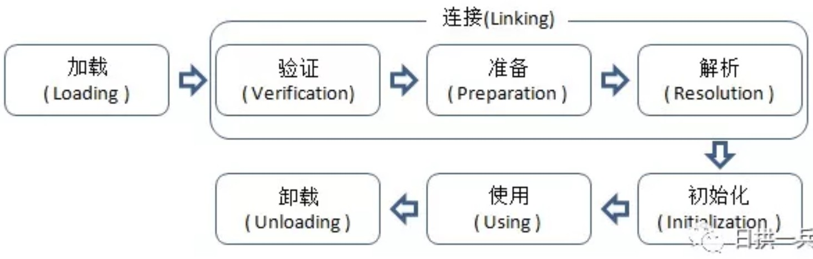
加载、验证、准备、初始化和卸载这5个阶段的顺序是确定的，类的加载过程必须按照这种顺序按部就班地开始，而解析阶段则不一定：它在某些情况下可以在初始化阶段之后再开始，这是为了支持Java语言的运行时绑定（也称为动态绑定或晚期绑定）
加载
在加载阶段（可以参考java.lang.ClassLoader的loadClass()方法），虚拟机需要完成以下3件事情：
- 通过一个类的全限定名来获取定义此类的二进制字节流（并没有指明要从一个Class文件中获取，可以从其他渠道，譬如：网络、动态生成、数据库等）；
- 将这个字节流所代表的静态存储结构转化为方法区的运行时数据结构；
- 在内存中生成一个代表这个类的java.lang.Class对象，作为方法区这个类的各种数据的访问入口；
加载阶段和连接阶段（Linking）的部分内容（如一部分字节码文件格式验证动作）是交叉进行的，加载阶段尚未完成，连接阶段可能已经开始，但这些夹在加载阶段之中进行的动作，仍然属于连接阶段的内容，这两个阶段的开始时间仍然保持着固定的先后顺序。
验证
验证是连接阶段的第一步，这一阶段的目的是为了确保Class文件的字节流中包含的信息符合当前虚拟机的要求，并且不会危害虚拟机自身的安全。
验证阶段大致会完成4个阶段的检验动作：
- 文件格式验证：验证字节流是否符合Class文件格式的规范；例如：是否以魔术0xCAFEBABE开头（当class文件以二进制形式打开，会看到这个文件头，cafebabe）、主次版本号是否在当前虚拟机的处理范围之内、常量池中的常量是否有不被支持的类型。
- 元数据验证：对字节码描述的信息进行语义分析（注意：对比javac编译阶段的语义分析），以保证其描述的信息符合Java语言规范的要求；例如：这个类是否有父类，除了java.lang.Object之外。
- 字节码验证：通过数据流和控制流分析，确定程序语义是合法的、符合逻辑的。
- 符号引用验证：确保解析动作能正确执行。
验证阶段是非常重要的，但不是必须的，它对程序运行期没有影响，如果所引用的类经过反复验证，那么可以考虑采用-Xverifynone参数来关闭大部分的类验证措施，以缩短虚拟机类加载的时间。
准备
准备阶段是正式为类变量分配内存并设置类变量初始值的阶段，这些变量所使用的内存都将在方法区中进行分配。这时候进行内存分配的仅包括类变量（被static修饰的变量），而不包括实例变量，实例变量将会在对象实例化时随着对象一起分配在堆中。其次，这里所说的初始值通常情况下是数据类型的零值，假设一个类变量的定义为：
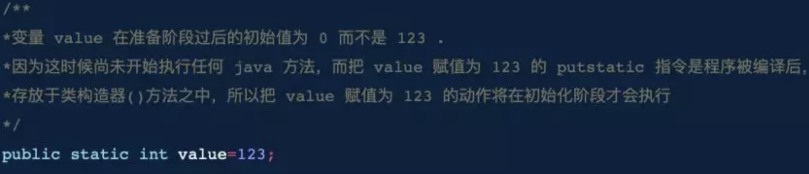
有通常情况就有特殊情况，这里的特殊是指：
解析
解析阶段是虚拟机将常量池内的符号引用替换为直接引用的过程。解析动作主要针对类或接口、字段、类方法、接口方法、方法类型、方法句柄和调用点限定符7类符号引用进行。
初始化
在介绍初始化时，要先介绍两个方法：
- 在编译生成class文件时，会自动产生两个方法，一个是类的初始化方法
- , 另一个是实例的初始化方法
clinit>：在jvm第一次加载class文件时调用，包括静态变量初始化语句和静态块的执行 : 在实例创建出来的时候调用，包括调用new操作符；调用 Class 或 Java.lang.reflect.Constructor 对象的newInstance()方法；调用任何现有对象的clone()方法；通过 java.io.ObjectInputStream 类的getObject() 方法反序列化。
类初始化阶段是类加载过程的最后一步，到了初始化阶段，才真正开始执行类中定义的java程序代码。在准备极端，变量已经付过一次系统要求的初始值，而在初始化阶段，则根据程序猿通过程序制定的主管计划去初始化类变量和其他资源，或者说：初始化阶段是执行类构造器
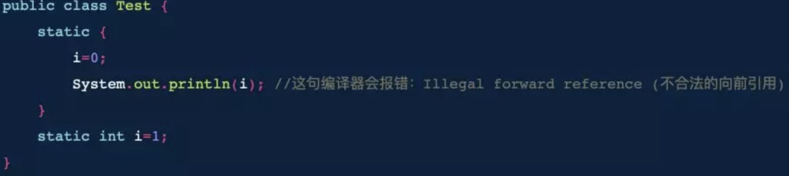
那么去掉报错的那句，改成下面：
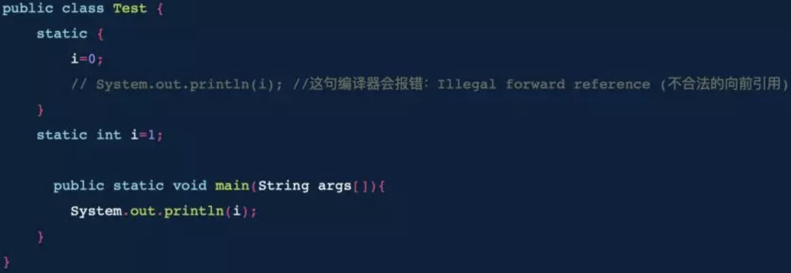
输出结果：1
为什么输出结果是 1，在准备阶段我们知道 i=0，然后类初始化阶段按照顺序执行，首先执行 static 块中的 i=0,接着执行 static赋值操作i=1, 最后在 main 方法中获取 i 的值为1
()方法与实例构造器 ()方法不同，它不需要显示地调用父类构造器，虚拟机会保证在子类 ()方法执行之前，父类的 ()方法方法已经执行完毕 - 由于父类的
()方法先执行，也就意味着父类中定义的静态语句块要优先于子类的变量赋值操作。 ()方法对于类或者接口来说并不是必需的，如果一个类中没有静态语句块，也没有对变量的赋值操作，那么编译器可以不为这个类生产 ()方法。 - 接口中不能使用静态语句块，但仍然有变量初始化的赋值操作，因此接口与类一样都会生成
()方法。但接口与类不同的是，执行接口的 ()方法不需要先执行父接口的 ()方法。只有当父接口中定义的变量使用时，父接口才会初始化。另外，接口的实现类在初始化时也一样不会执行接口的 ()方法。 - 虚拟机会保证一个类的
()方法在多线程环境中被正确的加锁、同步，如果多个线程同时去初始化一个类，那么只会有一个线程去执行这个类的 ()方法，其他线程都需要阻塞等待，直到活动线程执行 ()方法完毕。如果在一个类的 ()方法中有耗时很长的操作，就可能造成多个线程阻塞，在实际应用中这种阻塞往往是隐藏的。
让我们来验证上面的加载规则
验证 1: 虚拟机会保证在子类
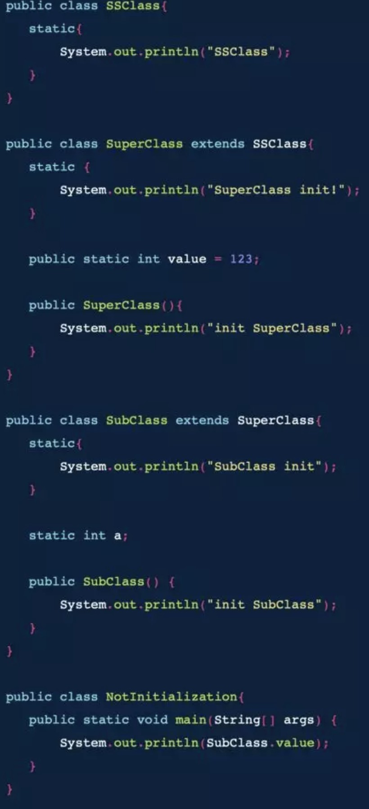
输出结果:
验证 2: 通过数组定义来引用类，不会触发此类的初始化(我的理解是数组的父类是Object)
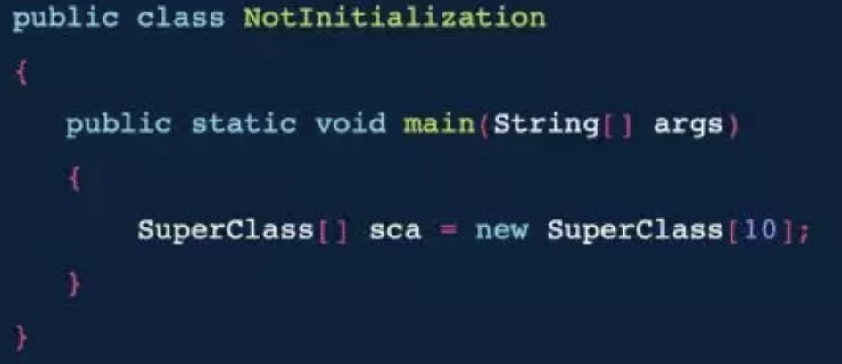
输出结果：无
验证 3: 常量在编译阶段会存入调用类的常量池中，本质上并没有直接引用到定义常量的类，因此不会触发定义常量的类的初始化
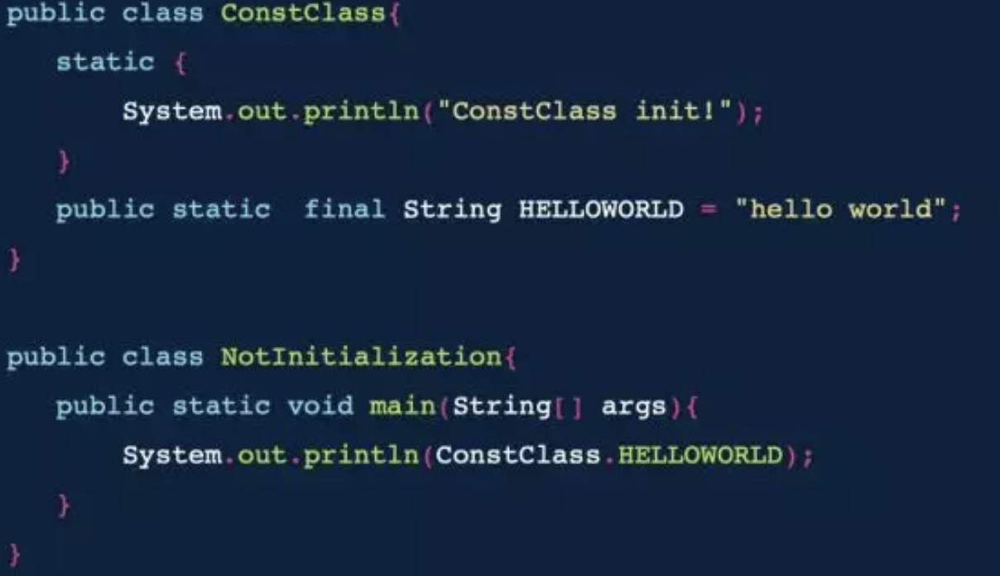
输出结果：hello world
验证小结
虚拟机规范严格规定了有且只有5中情况（jdk1.7）必须对类进行“初始化”（而加载、验证、准备自然需要在此之前开始）：
- 遇到 new, getstatic, putstatic, invokestatic 这些字节码指令时，如果类没有进行过初始化，则需要先触发其初始化。生成这4条指令的最常见的Java代码场景是：使用new关键字实例化对象的时候、读取或设置一个类的静态字段（被final修饰、已在编译器把结果放入常量池的静态字段除外）的时候，以及调用一个类的静态方法的时候。
- 使用 java.lang.reflect 包的方法对类进行反射调用的时候，如果类没有进行过初始化，则需要先触发其初始化。
- 当初始化一个类的时候，如果发现其父类还没有进行过初始化，则需要先触发其父类的初始化。
- 当虚拟机启动时，用户需要指定一个要执行的主类（包含main()方法的那个类），虚拟机会先初始化这个主类。
- 当使用jdk1.7动态语言支持时，如果一个 java.lang.invoke.MethodHandle 实例最后的解析结果REF_getstatic, REF_putstatic, REF_invokeStatic 的方法句柄，并且这个方法句柄所对应的类没有进行初始化，则需要先出触发其初始化。
有了这个加载规则的印象，双亲委派模型就很好理解了，别着急，继续向下看, 你会发现你的理解层面提高了
双亲委派模型
刚看到这个词汇的时候我是完全懵懂的状态，其实就是定义了 JVM 启动的时候类的加载规则, 大家要按规矩办事，好办事，来看下图：
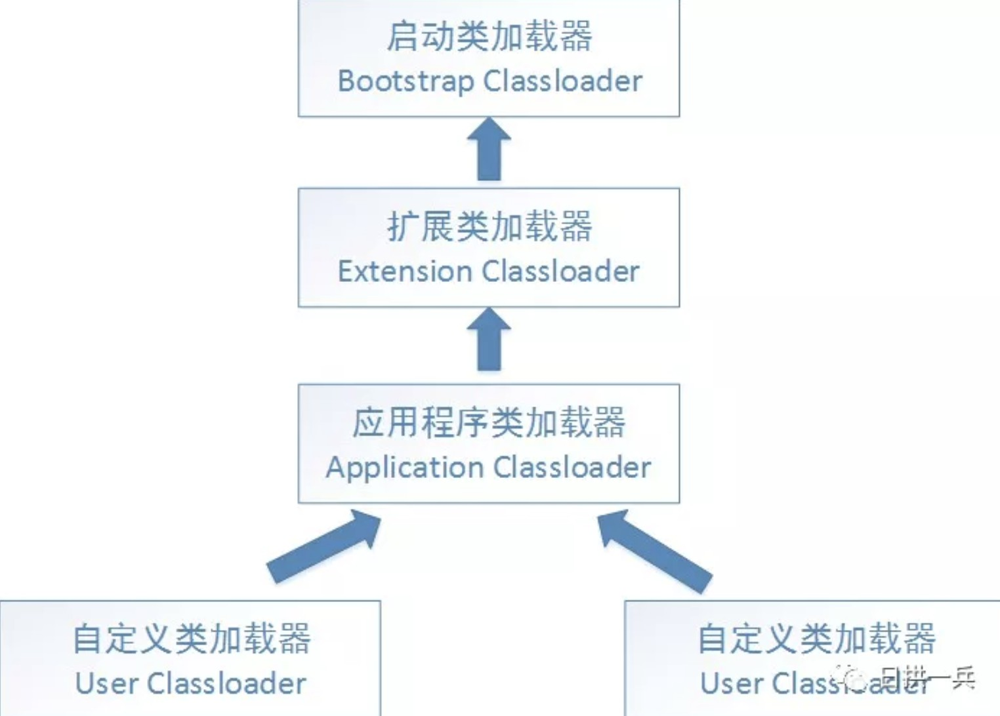
所谓双亲委派是指每次收到类加载请求时，先将请求委派给父类加载器完成（所有加载请求最终会委派到顶层的Bootstrap ClassLoader加载器中），如果父类加载器无法完成这个加载（该加载器的搜索范围中没有找到对应的类），子类尝试自己加载， 如果都没加载到，则会抛出 ClassNotFoundException 异常， 看到这里其实就解释了文章开头提出的第一个问题，父加载器已经加载了JDK 中的 String.class 文件，所以我们不能定义同名的 String java 文件。
为什么会有这样的规矩设定？
|
|
我们发现除了启动类加载器（BootStrap ClassLoader），每个类都有其”父类”加载器. 其实这里的父子关系是组合模式，不是继承关系来实现
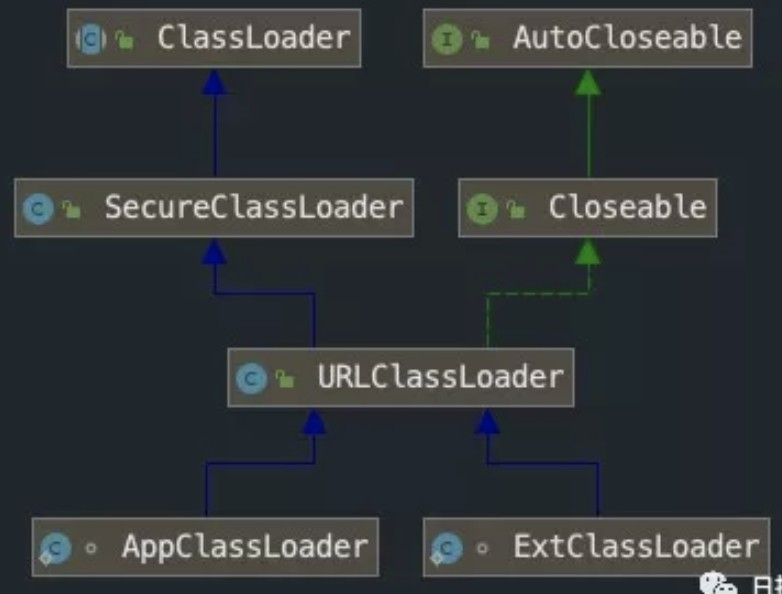
从图中可以看到类 AppClassLoader 和 ExtClassLoader 都继承 URLClassLoader， 而 URLClassLoader 又继承 ClassLoader， 在 ClassLoader 中有一个属性
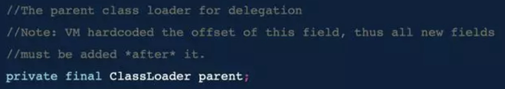
在通过构造函数实例化 AppClassLoader 和 ExtClassLoader 的时候都要传入一个 classloader 作为当前 classloader 的 parent
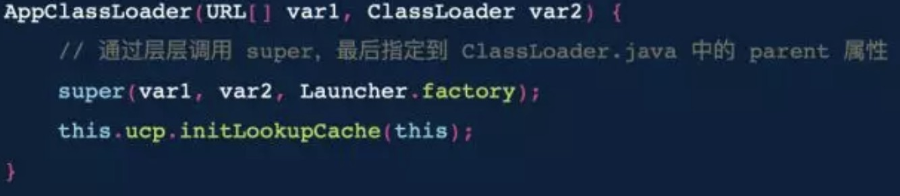
顶层ClassLoader有几个函数很关键，先有个印象
|
|
类加载器责任范围
上面我们提到每个加载器都有对应的加载搜索范围
- Bootstrap ClassLoader:这个加载器不是一个Java类，而是由底层的c++实现，负责在虚拟机启动时加载Jdk核心类库（如：rt.jar、resources.jar、charsets.jar等）以及加载后两个类加载器。这个ClassLoader完全是JVM自己控制的，需要加载哪个类，怎么加载都是由JVM自己控制，别人也访问不到这个类
- Extension ClassLoader:是一个普通的Java类，继承自ClassLoader类，负责加载{JAVA_HOME}/jre/lib/ext/目录下的所有jar包。
- App ClassLoader：是Extension ClassLoader的子对象，负责加载应用程序classpath目录下的所有jar和class文件。
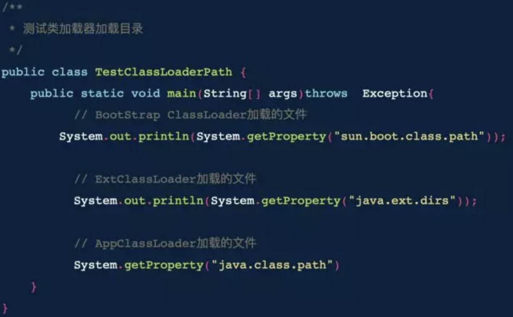
大家自行运行这个文件，就可以看到每个类加载器加载的文件了
两种类的加载方式
通常用这两种方式来动态加载一个 java 类，Class.forName() 与 ClassLoader.loadClass() 但是两个方法之间也是有一些细微的差别
Class.forName() 方式
查看Class类的具体实现可知，实质上这个方法是调用原生的方法：
形式上类似于Class.forName(name,true,currentLoader)。综上所述，Class.forName 如果调用成功会：
- 保证一个Java类被有效得加载到内存中；
- 类默认会被初始化，即执行内部的静态块代码以及保证静态属性被初始化；
- 默认会使用当前的类加载器来加载对应的类。
ClassLoader.loadClass方式
如果采用这种方式的类加载策略，由于双亲托管模型的存在，最终都会将类的加载任务交付给Bootstrap ClassLoader进行加载。跟踪源代码，最终会调用原生方法：
与此同时，与上一种方式的最本质的不同是，类不会被初始化，只有显式调用才会进行初始化。综上所述，ClassLoader.loadClass 如果调用成功会：
- 类会被加载到内存中；
- 类不会被初始化，只有在之后被第一次调用时类才会被初始化；
- 之所以采用这种方式的类加载，是提供一种灵活度，可以根据自身的需求继承ClassLoader类实现一个自定义的类加载器实现类的加载。（很多开源Web项目中都有这种情况，比如tomcat，struct2，jboss。原因是根据Java Servlet规范的要求，既要Web应用自己的类的优先级要高于Web容器提供的类，但同时又要保证Java的核心类不被任意覆盖，此时重写一个类加载器就很必要了）
双亲委派模型源码分析
Launcher
分析类加载器源码要从 sun.misc.Launcher.class 文件看起, 关键代码已添加注释，同时可以在此类中看到 ExtClassLoader 和 AppClassLoader 的定义，也验证了我们上文提到的他们不是继承关系，而是通过指定 parent 属性来形成的组合模型
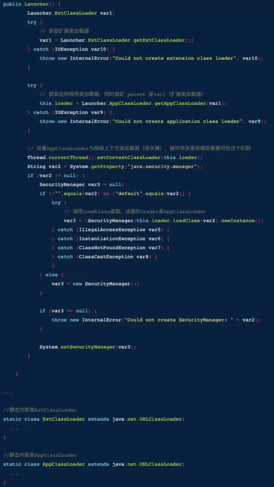
进入上面第25行的 loadClass 方法中
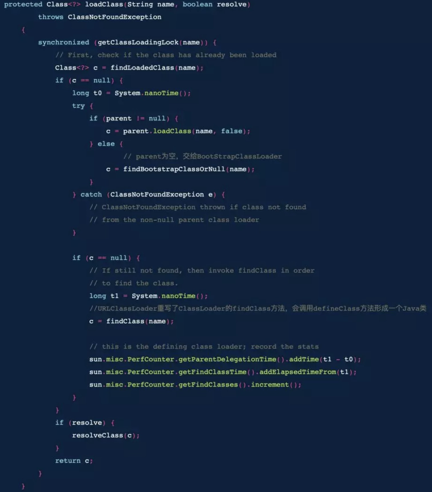
我们看到方法有同步块（synchronized）, 这也就解释了文章开头第2个问题，多线程情况不会出现重复加载的情况。同时会询问parent classloader是否有加载，如果没有，自己尝试加载。
URLClassLoader中的 findClass方法：
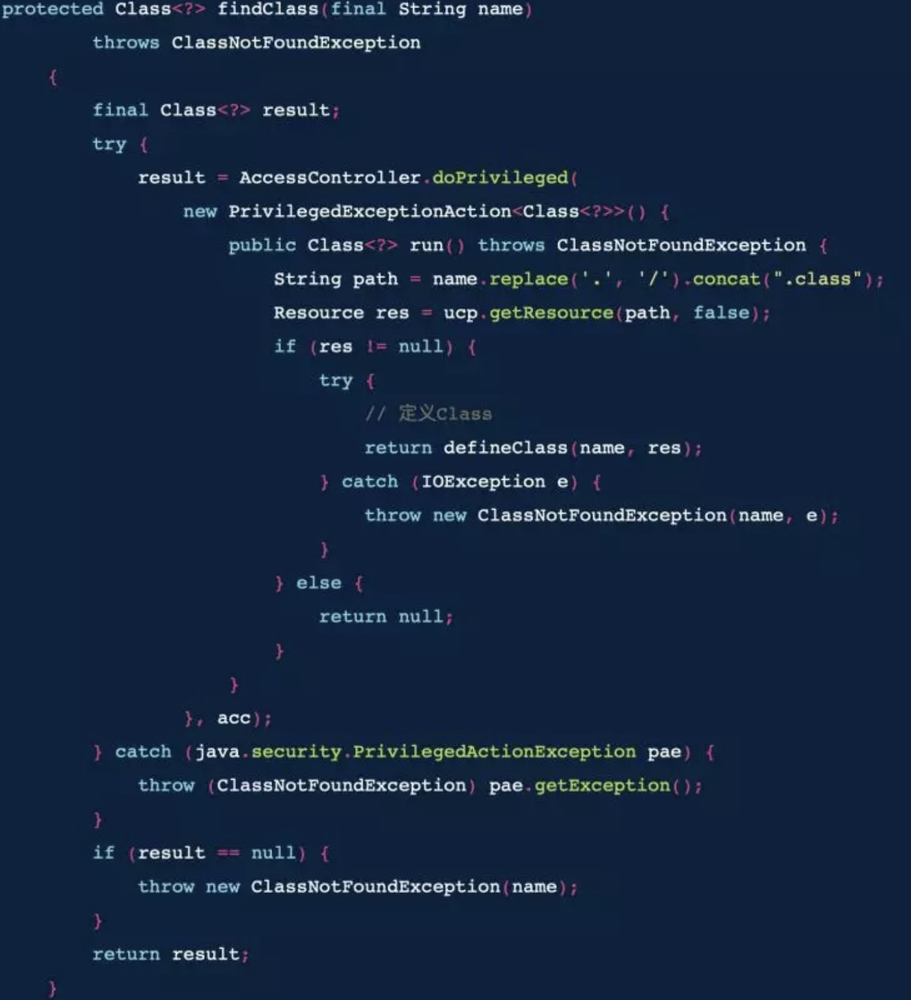
借用网友的一个加载时序图来解释整个过程更加清晰：
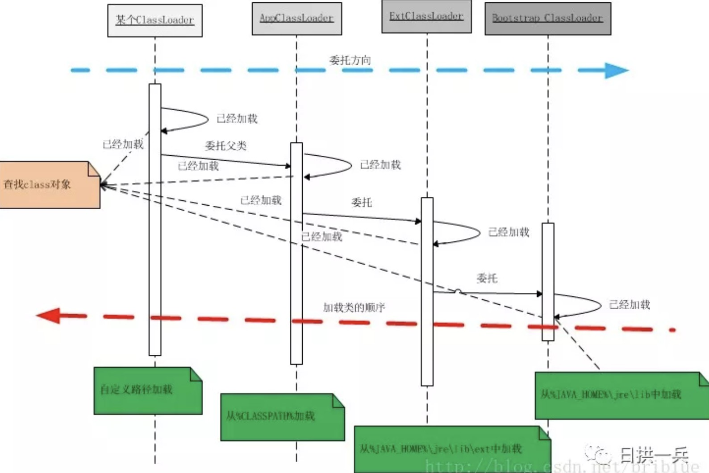
双亲委派模型的破坏
Java本身有一套资源管理服务JNDI，是放置在rt.jar中，由启动类加载器加载的。以对数据库管理JDBC为例，java给数据库操作提供了一个Driver接口：
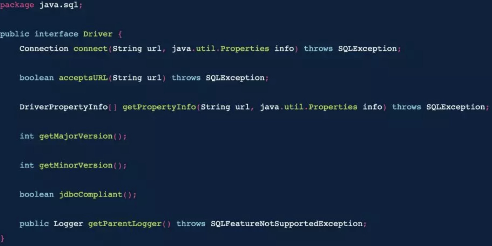
然后提供了一个DriverManager来管理这些Driver的具体实现：
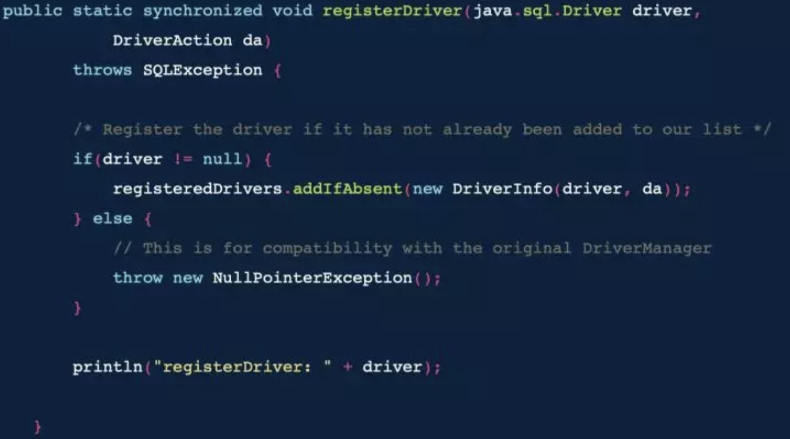
这里省略了大部分代码，可以看到我们使用数据库驱动前必须先要在DriverManager中使用registerDriver()注册，然后我们才能正常使用。
不破坏双亲委派模型的情况（不使用JNDI服务）
我们看下mysql的驱动是如何被加载的：
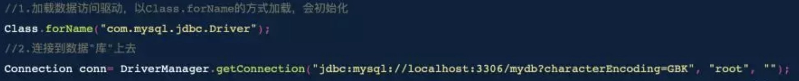
核心就是这句Class.forName()触发了mysql驱动的加载，我们看下mysql对Driver接口的实现：
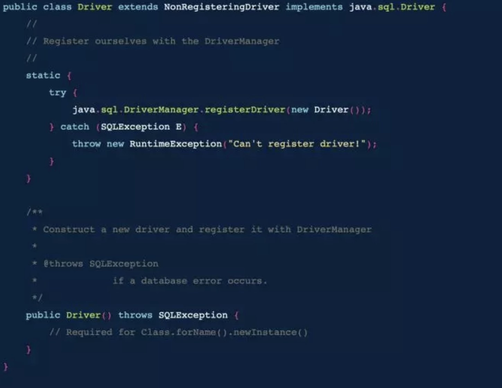
可以看到，Class.forName()其实触发了静态代码块，然后向DriverManager中注册了一个mysql的Driver实现。这个时候，我们通过DriverManager去获取connection的时候只要遍历当前所有Driver实现，然后选择一个建立连接就可以了。
破坏双亲委派模型的情况
在JDBC4.0以后，开始支持使用spi的方式来注册这个Driver，具体做法就是在mysql的jar包中的META-INF/services/java.sql.Driver 文件中指明当前使用的Driver是哪个，然后使用的时候就直接这样就可以了：
可以看到这里直接获取连接，省去了上面的Class.forName()注册过程。
现在，我们分析下看使用了这种spi服务的模式原本的过程是怎样的:
- 第一，从META-INF/services/java.sql.Driver文件中获取具体的实现类名“com.mysql.jdbc.Driver”
- 第二，加载这个类，这里肯定只能用class.forName(“com.mysql.jdbc.Driver”)来加载
好了，问题来了，Class.forName()加载用的是调用者的Classloader，这个调用者DriverManager是在rt.jar中的，ClassLoader是启动类加载器，而com.mysql.jdbc.Driver肯定不在/lib下，所以肯定是无法加载mysql中的这个类的。这就是双亲委派模型的局限性了，父级加载器无法加载子级类加载器路径中的类。
那么，这个问题如何解决呢？按照目前情况来分析，这个mysql的drvier只有应用类加载器能加载，那么我们只要在启动类加载器中有方法获取应用程序类加载器，然后通过它去加载就可以了。这就是所谓的线程上下文加载器。
|
|
很明显，线程上下文类加载器让父级类加载器能通过调用子级类加载器来加载类，这打破了双亲委派模型的原则
现在我们看下DriverManager是如何使用线程上下文类加载器去加载第三方jar包中的Driver类的，先来看源码：
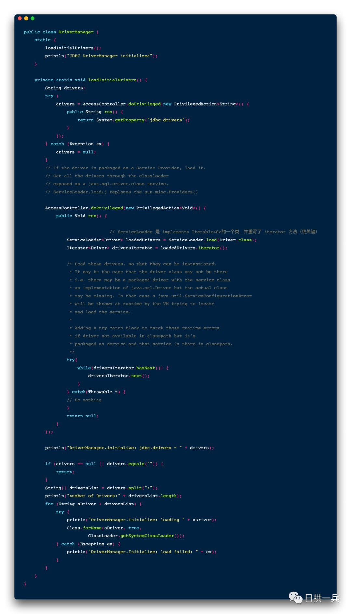
使用时，我们直接调用DriverManager.getConnection() 方法自然会触发静态代码块的执行，开始加载驱动然后我们看下ServiceLoader.load()的具体实现：
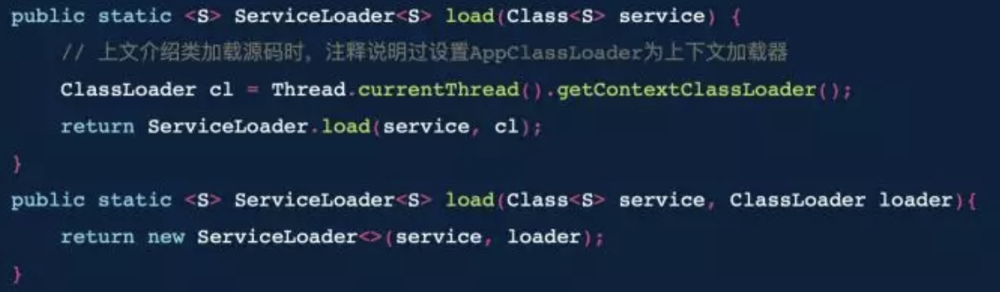
继续向下看构造函数实例化 ServiceLoader 做了哪些事情：
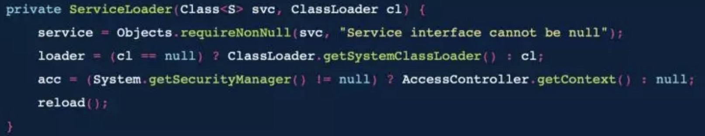
查看 reload() 函数：
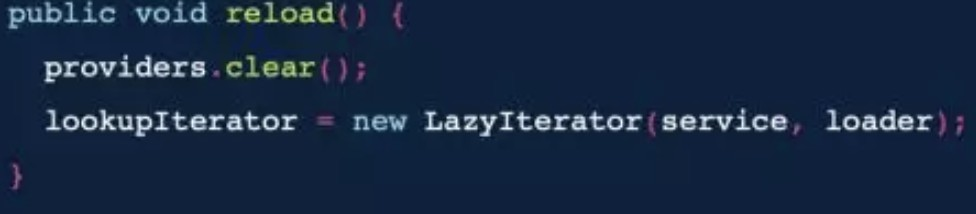
继续查看LazyIterator构造器，该类同样实现了Iterator接口：
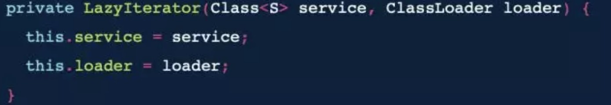
实例化到这里我们也将上下文得到的类加载器实例化到这里，来回看ServiceLoader 重写的 iterator() 方法：
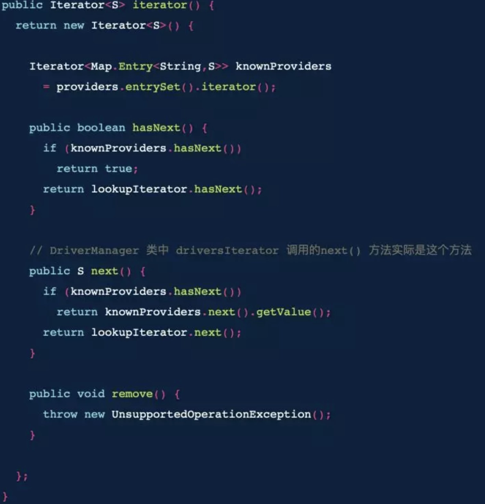
上面next() 方法调用了lookupIterator.next()，这个lookupIterator 就是刚刚实例化的 LazyIterator(); 来看next方法
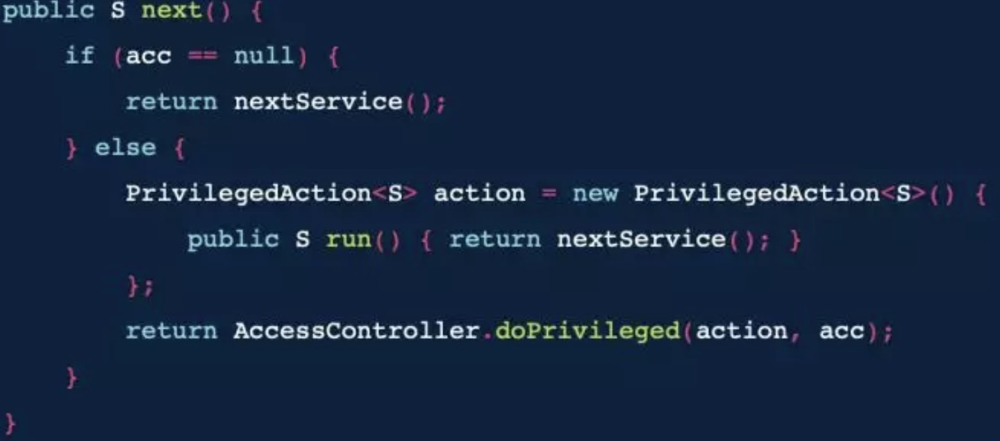
继续查看nextService 方法：
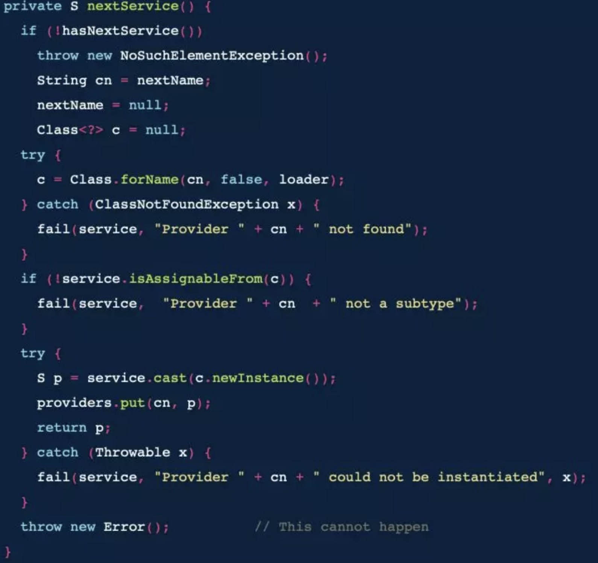
终于到这里了，在上面 nextService函数中第8行调用了c = Class.forName(cn, false, loader) 方法，我们成功的做到了通过线程上下文类加载器拿到了应用程序类加载器（或者自定义的然后塞到线程上下文中的），同时我们也查找到了厂商在子级的jar包中注册的驱动具体实现类名，这样我们就可以成功的在rt.jar包中的DriverManager中成功的加载了放在第三方应用程序包中的类了同时在第16行完成Driver的实例化，等同于new Driver(); 文章开头的问题在理解到这里也迎刃而解了
JAVA热部署实现
首先谈一下何为热部署（hotswap），热部署是在不重启 Java 虚拟机的前提下，能自动侦测到 class 文件的变化，更新运行时 class 的行为。Java 类是通过 Java 虚拟机加载的，某个类的 class 文件在被 classloader 加载后，会生成对应的 Class 对象，之后就可以创建该类的实例。默认的虚拟机行为只会在启动时加载类，如果后期有一个类需要更新的话，单纯替换编译的 class 文件，Java 虚拟机是不会更新正在运行的 class。如果要实现热部署，最根本的方式是修改虚拟机的源代码，改变 classloader 的加载行为，使虚拟机能监听 class 文件的更新，重新加载 class 文件，这样的行为破坏性很大，为后续的 JVM 升级埋下了一个大坑。
另一种友好的方法是创建自己的 classloader 来加载需要监听的 class，这样就能控制类加载的时机，从而实现热部署。
热部署步骤：
- 销毁自定义classloader(被该加载器加载的class也会自动卸载)；
- 更新class
- 使用新的ClassLoader去加载class
JVM中的Class只有满足以下三个条件，才能被GC回收，也就是该Class被卸载（unload）：
- 该类所有的实例都已经被GC，也就是JVM中不存在该Class的任何实例。
- 加载该类的ClassLoader已经被GC。
- 该类的java.lang.Class 对象没有在任何地方被引用，如不能在任何地方通过反射访问该类的方法
自定义类加载器
要创建用户自己的类加载器，只需要继承java.lang.ClassLoader类，然后覆盖它的findClass(String name)方法即可，即指明如何获取类的字节码流。
如果要符合双亲委派规范，则重写findClass方法（用户自定义类加载逻辑）；要破坏的话，重写loadClass方法(双亲委派的具体逻辑实现)。
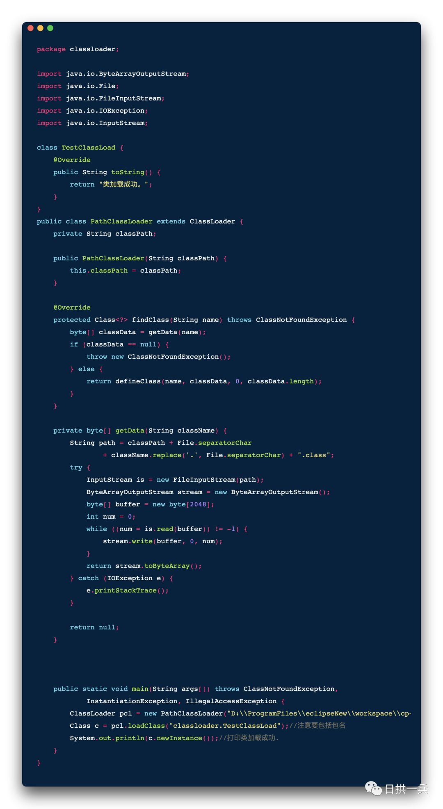
ref:
https://blog.csdn.net/u014634338/article/details/81434327
https://www.cnblogs.com/aspirant/p/7200523.html
https://www.cnblogs.com/gdpuzxs/p/7044963.html